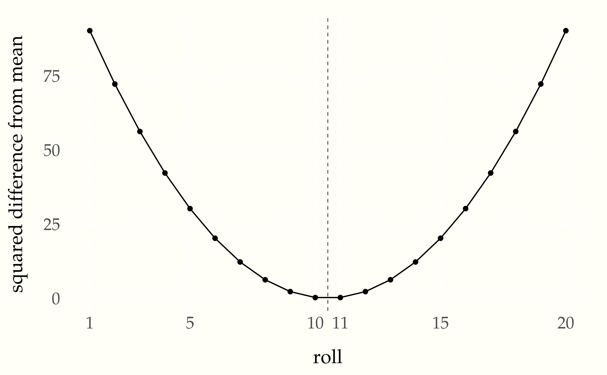

Almost all quantities of interest in statistics, ranging from parameter estimates to event probabilities and forecasts can be expressed as expectations of random variables. Expectation ties directly to simulation because expectations are computed as averages of samples of those random variables.
Variance is a measure of the variation of a random variable. It’s also defined as an expectation. Curiously, it is on the quadratic scale—it’s defined in terms of squared differences from expected values. This chapter will show why this is the natural measure of variation and how it relates to expectations.
Suppose we have a discrete random variable \(Y\). Its expectation is defined as its average value, which is a weighted average of its values, where the weights are the probabilities.
\[ \mathbb{E}\!\left[ Y \right] \ = \ \sum_{y \in Y} \, y \times p_Y(y). \]
The notation \(y \in Y\) is meant to indicate the summation is over all possible values \(y\) that the random variable \(Y\) may take on.
For example, if \(Y\) is the result of a fair coin flip, then
\[ \mathbb{E}\left[ Y \right] \ = \ 0 \times \frac{1}{2} + 1 \times \frac{1}{2} \ = \ \frac{1}{2}. \]
Now suppose \(Y\) is the result of a fair six-sided die roll. The expected value of \(Y\) is
\[ \mathbb{E} \left[ Y \right] \ = \ 1 \times \frac{1}{6} + 2 \times \frac{1}{6} + \cdots + 6 \times \frac{1}{6} \ = \ \frac{21}{6} \ = \ 3.5. \]
Now suppose \(U\) is the result of a fair twenty-sided die roll. Using the same formula as above, the expectation works out to \(\frac{210}{20} = 10.5\).62 In general, the expectation of a die roll is half the number of faces plus 0.5, because \[\sum_{n=1}^N n \times \frac{1}{N} \ = \ \frac{1}{N} \sum_{n=1}^N n \ = \ \frac{1}{N}\frac{N \times (N + 1)}{2} \ = \frac{N + 1}{2}.\]
We have been computing expectations all along for event probabilities. Expectations are the natural calculation for simulations, because
\[ \mathbb{E}\left[ Y \right] \ = \ \lim_{M \rightarrow \infty} \frac{1}{M} \sum_{m = 1}^M y^{(m)}, \]
where the \(y^{(m)}\) are individual simulations of \(Y\).
For any finite \(M\), we get an estimate of the expectation defined as
\[ \mathbb{E}\left[ Y \right] \ = \ \frac{1}{M} \sum_{m = 1}^M y^{(m)}. \]
The event probability estimates from sampling can be viewed as calculating the expectation of the value of an indicator function. For example,63 The expectation is implicitly the expectation of a new random variable defined as \(Z = \mathrm{I}[Y = 1].\)
\[ \begin{array}{rcl} \mathrm{Prob}\!\left[ Y = 1 \right] & = & \mathbb{E}\left[\mathrm{I}\left[Y = 1\right]\right] \\[6pt] & \approx & \displaystyle \frac{1}{M} \sum_{m = 1}^M \, \mathrm{I}\!\left[y^{(m)} = 1\right]. \end{array} \]
The indicator function converts an event to a numerical 1 or 0, then the expectation does the averaging. The second line provides an estimate of the expectation based on a finite number of simulations of the random variable \(y^{(m)}\) used to define the event.
Variance is a measure of how much a random variable can be expected to vary around its expected value. For example, consider a random variable \(Y\) representing a fair throw of a six-sided die. The expected value is \(\mathbb{E}[Y] = 3.5\), but the result may vary between 1 and 6.
Variance measures the expected square difference between a random variable and its expected value.
\[ \mathrm{var}[Y] \ = \ \mathbb{E}\!\left[ \left( Y - \mathbb{E}[Y] \right)^2 \right]. \]
The nested expectation, \(\mathbb{E}[Y]\), is just the expectation of \(Y\), and as such it’s a constant. The expectation operator \(\mathbb{E}[\, \cdot \,]\) captures its random variables. Thus we could have written this as
\[ \mathbb{E}\!\left[ \left(Y - c\right)^2 \right], \]
where the constant \(c = \mathbb{E}[Y]\).
In our example of the six-sided die, the expectation is the average roll, \(\mathrm{E}[Y] = 3.5\). As is often the case with averages of discrete random variables, 3.5 is not itself a possible value of the variable. That is, it’s not possible to roll a 3.5 on a six-sided die.
We can continue working out the expectation notation for our example, expanding
\[ \begin{array}{rcl} \mathbb{E}\!\left[ \left(Y - 3.5\right)^2 \right] & = & \sum_{y \in Y} p_Y(y) \times \left(y - 3.5\right)^2 \\[6pt] & = & \sum_{y \in 1:6} \frac{1}{6} \times \left(y - 3.5\right)^2 \\[6pt] & = & \frac{1}{6} \left( (1 - 3.5)^2 + (2 - 3.5)^2 + (3 - 3.5)^2 + (4 - 3.5)^2 + (5 - 3.5)^2 + (6 - 3.5)^2 \right) \\[6pt] & = & \frac{1}{6} \left( 6.25 + 2.25 + 0.25 + 0.25 + 2.25 + 6.25 \right) \\[6pt] & \approx & 2.92. \end{array} \]
We can, of course, use simulation to calculate variances.
sum_sq_diffs = 0
for (m in 1:M) {
y = uniform_rng(1:6)
sum_sq_diffs += (y - 3.5)^2
print 'estimated var[Y] = ' sum_sq_diffs / MAnd running that for \(M = 1\,000\,000\) iterations gives us
estimated var[Y] = 2.92We see that the extreme values have an outsized influence on the sum of squared errors. That’s because we’re dealing with squared error, which reduces small errors (e.g., \(0.5^2 = 0.25\)) and magnifies large errors (e.g., \(5^2 = 25\)). We can see a plot of the squared differences from the mean that wold be involved in calculating the variance of a 20-sided die.
Figure 3.1: Squared differences from the mean of 10.5 for a 20-sided die roll. The mean is indicated with a dashed vertical line.
Why are we calculating average squared difference from the expectation rather than, say, average absolute difference? The answer has to do with the nature of averages. It turns out the average is the \(x\) that minimizes the sum of squared differences,
\[ \mathrm{sqe}(x, y) = \sum_{n \in 1:N} (y_n - x)^2, \]
or equivalently, minimizes the average (or mean) squared difference,
\[ \mathrm{msqe}(x, y) = \frac{1}{N} \sum_{n \in 1:N} (y_n - x)^2. \]
That is,
\[ \mathrm{avg}(y) \ = \ \frac{1}{N} \sum_{n = 1}^N y_n \ = \ \mathrm{argmin}_x \ \mathrm{msqe}(x, y) \]
The notation \(\mathrm{argmin}_x \ f(x)\) is meant to return the \(x\) at which \(f(x)\) takes on its minimum value. For example, \(\mathrm{argmin}_u (u - 1)^2 + 7 = 1\), whereas the minimum value is given by \(\mathrm{min}_u (u - 1)^2 + 7 = 7\).
Averages themselves are important because expectations are defined in terms of averages, and event probabilities are defined in terms of expectations. Furthermore, the central limit theorem governs the convergence of averages as estimates of quantities of interest in terms of squared error.
The difficulty in managing variance is that it has different units than the variable it is measuring the variation of. For example, if \(Y\) reprents the fill of a bottle with units in milliliters, then \(\mathrm{var}[Y]\) has units of squared milliliters. Squared milliliters are not natural. As we saw even with the calculation for a single six-sided die, values of 1 and 6 had 6.25 squared difference from the expected value of 3.5, whereas 3 and 4 had only 0.25 squared difference from the expected value. Small values (below one) get smaller (\(0.5^2 = 0.25\)) and large values are amplified (\(2.5^2 = 6.25\)).
Instead of dealing with variance, with its quadratic scale and mismatched units, it is common to convert back at the end to ordinary units by taking a square root. The standard deviation of a random variable is defined as the square root of its variance,
\[ \mathrm{sd}[Y] = \sqrt{\mathrm{var}\left[ Y \right]}. \]
While it is not known why Karl Pearson coined the term “standard deviation”,64 Pearson, K., 1893. Contributions to the mathematical theory of evolution. Philosophical Transactions of the Royal Society of London, Series A. Nov 16: 329–333, which on page 330 coins the term stating only, “standard deviations—a term used in the memoir for what corresponds in frequency curves to the error of mean square.” the key consideration here is that \(\mathrm{sd}[Y]\) has the same units as the variable \(Y\) itself and is thus much easier to interpret.